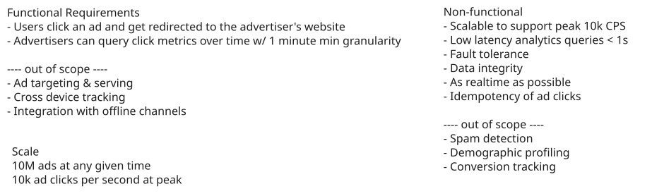
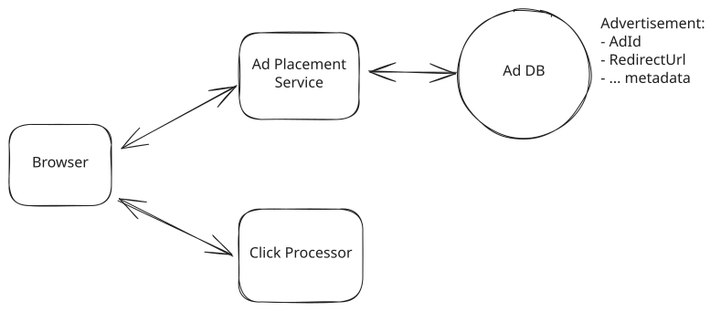
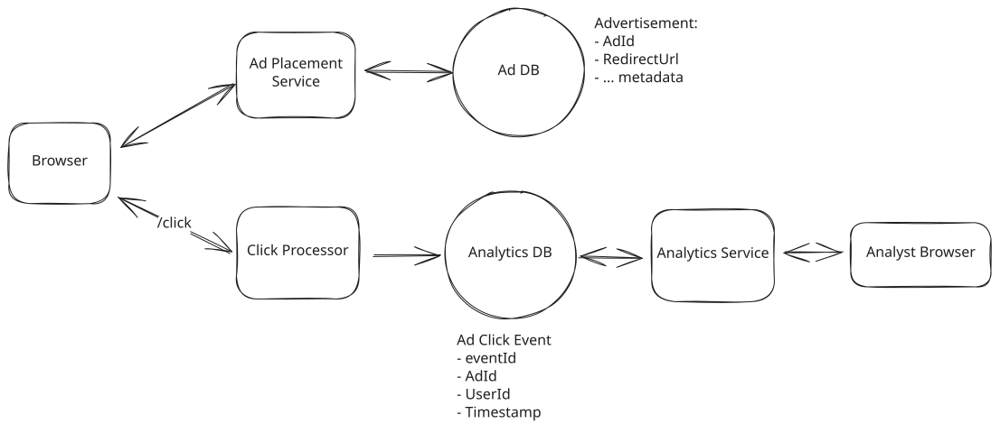
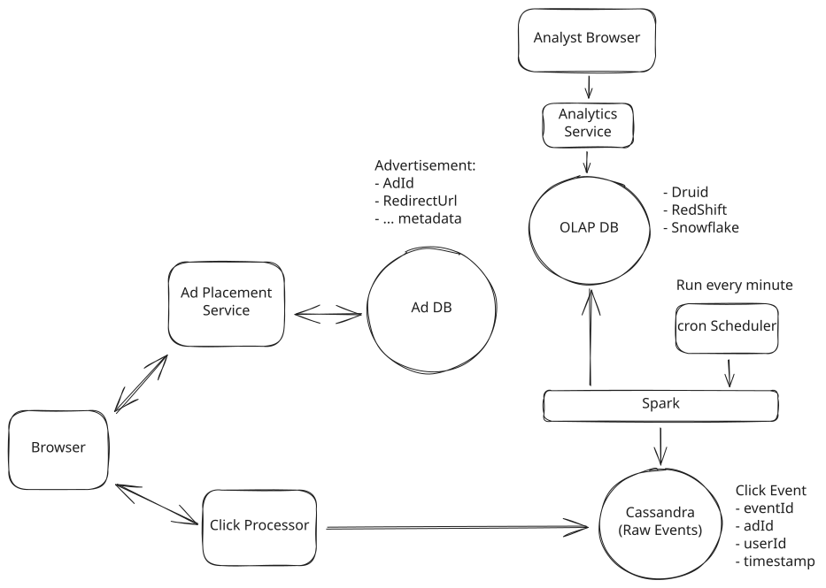
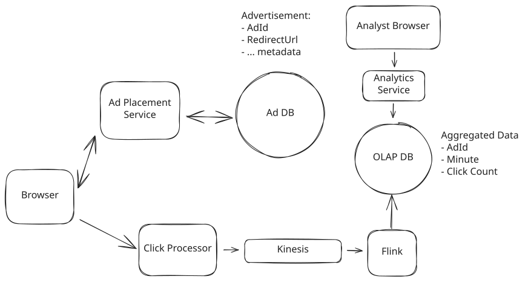
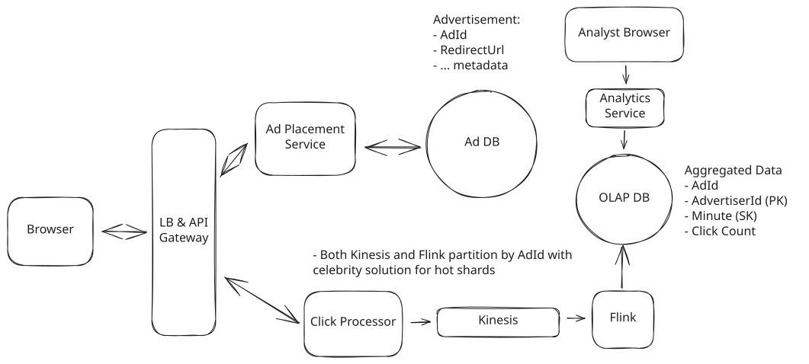
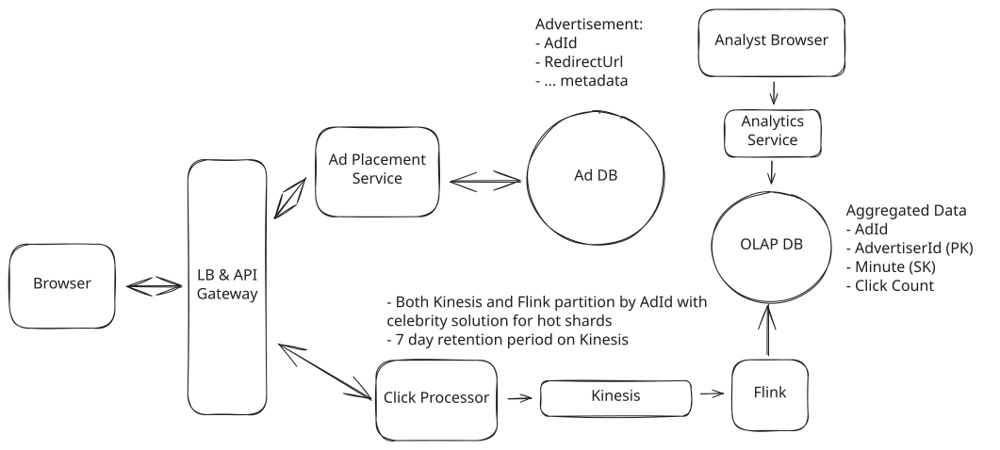
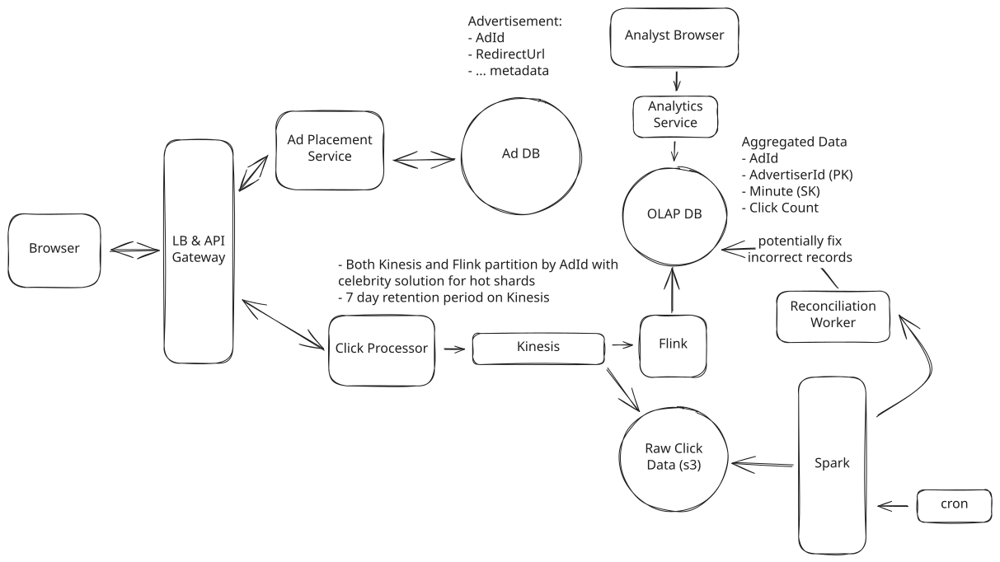
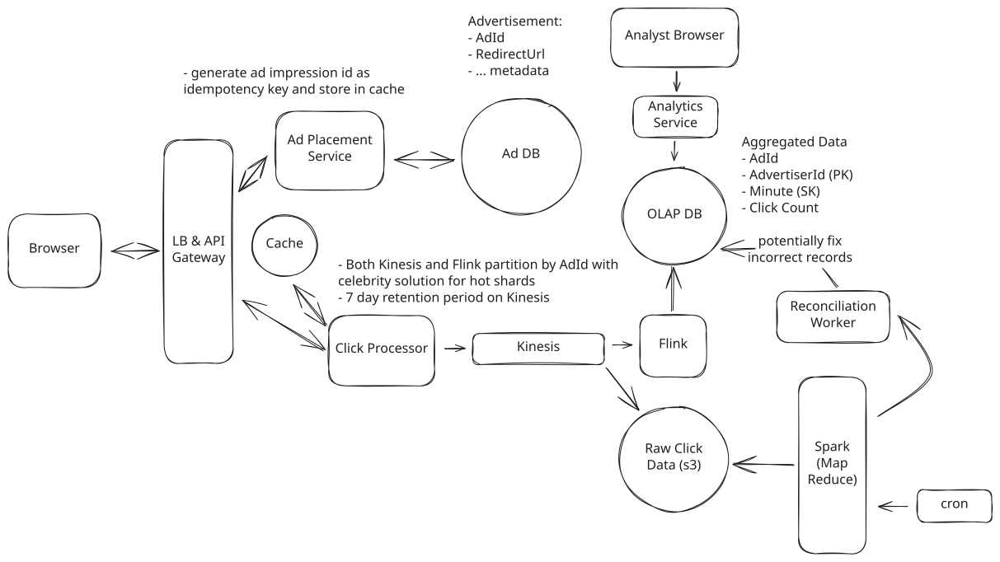

Common Problems
Ad Click Aggregator
Scaling Writes
Understanding the Problem
🖱️ What is an Ad Click Aggregator
An Ad Click Aggregator is a system that collects and aggregates data on ad clicks. It is used by advertisers to track the performance of their ads and optimize their campaigns. For our purposes, we will assume these are ads displayed on a website or app, like Facebook.
Functional Requirements
Core Requirements
- Users can click on an ad and be redirected to the advertiser's website
- Advertisers can query ad click metrics over time with a minimum granularity of 1 minute
Below the line (out of scope):
- Ad targeting
- Ad serving
- Cross device tracking
- Integration with offline marketing channels

Non-Functional Requirements
Before we jump into our non-functional requirements, it's important to ask your interviewer about the scale of the system. For this design in particular, the scale will have a large impact on the database design and the overall architecture.
We are going to design for a system that has 10M active ads and a peak of 10k clicks per second. Since traffic varies throughout the day and 10k is our peak (not sustained) rate, the average throughput will be much lower. If we assume the average is roughly 1k clicks per second (a common heuristic is peak ≈ 10x average), that gives us about 1k * 86,400 seconds/day ≈ 100M clicks per day.
With that in mind, let's document the non-functional requirements:
Core Requirements
- Scalable to support a peak of 10k clicks per second
- Low latency analytics queries for advertisers (sub-second response time)
- Fault tolerant and accurate data collection. We should not lose any click data.
- As realtime as possible. Advertisers should be able to query data as soon as possible after the click.
- Idempotent click tracking. We should not count the same click multiple times.
Below the line (out of scope):
- Fraud or spam detection
- Demographic and geo profiling of users
- Conversion tracking
Here's how it might look on your whiteboard:

Requirements
The Set Up
Planning the Approach
For this question, which is less of a user-facing product and more focused on data processing, we're going to follow the delivery framework outlined here, focusing on the system interface and the data flow.
System Interface
For data processing questions like this one, it helps to start by defining the system's interface. This includes clearly outline what data the system receives and what it outputs, establishing a clear boundary of the system's functionality. The inputs and outputs of this system are very simple, but it's important to get these right!
- Input: Ad click data from users.
- Output: Ad click metrics for advertisers.
Data Flow
The data flow is the sequential series of steps we'll cover in order to get from the inputs to our system to the outputs. Clarifying this flow early will help to align with our interviewer before the high-level design. For the ad click aggregator:
- User clicks on an ad on a website.
- The click is tracked and stored in the system.
- The user is redirected to the advertiser's website.
- Advertisers query the system for aggregated click metrics.
Note that this is simple, we will improve upon as we go, but it's important to start simple and build up from there.
High-Level Design
1) Users can click on ads and be redirected to the target
Let's start with the easy part, when a user clicks on an ad in their browser, we need to make sure that they're redirected to the advertiser's website. We'll introduce an Ad Placement Service which will be responsible for placing ads on the website and associating them with the correct redirect URL. Think of this as the service that decides which ad to show a user and delivers the ad creative (image, text, etc.) along with metadata like the redirect URL. We're treating it as a black box since ad targeting and serving are out of scope. We just need to know that it exists and provides the ads that users see.
When a user clicks on an ad which was placed by the Ad Placement Service, we will send a request to our /click endpoint, which will track the click and then redirect the user to the advertiser's website.

Handle Redirect
There are two ways we can handle this redirect, with one being simpler and the other being more robust.
Approach
The simplest thing we can do is send over a redirect URL with each ad that's placed on the website. When a user clicks on the ad, the browser will automatically redirect them to the target URL. It's simple, straightforward, and requires no additional server side logic. We would then, in parallel, POST to our /click endpoint to track the click.
Challenges
The downside with this approach is that users could go to an advertiser's website without us knowing about it. This could lead to discrepancies in our click data and make it harder for advertisers to track the performance of their ads. Sophisticated users could grab the url off of the page and navigate to it directly, bypassing our click tracking entirely. Someone would probably build a browser extension to do this.
Approach
A more robust solution is to have the user click on the ad, which will then send a request to our server. Our server can then track the click and respond with a redirect to the advertiser's website via a 302 (redirect) status code.
This way, we can ensure that we track every click and provide a consistent experience for users and advertisers. This approach also allows us to append additional tracking parameters to the URL, which can help the advertiser track the source of the click, but this is out of scope so we won't go into more detail here.
Challenges
The only downside is the added complexity, which could slow down the user experience. We need to make sure that our system can handle the additional load and respond quickly to the user's request.
2) Advertisers can query ad click metrics over time at 1 minute intervals
Our users were successfully redirected, now let's focus on the advertisers. They need to be able to quickly query metrics about their ads to see how they're performing. We'll expand on the click processor path that we introduced above by breaking down some options for how a click is processed and stored.
Once our /click endpoint receives a request what happens next?
Approach
When a click comes in from a user, we can simply store that click event in our database. The schema would look something like this:
| EventId | Ad Id | User Id | Timestamp |
|---|---|---|---|
| 1 | 123 | 456 | 1640000000 |
Then, when an advertiser wants to query metrics, we would query the database for all events that match the ad ID and time range running a GROUP BY query to get the metrics that they need. For example,
SELECT
COUNT(*) as total_clicks,
COUNT(DISTINCT UserId) as unique_users
FROM ClickEvents
WHERE AdId = 123
AND Timestamp BETWEEN 1640000000 AND 1640000001
Store and Query From the Same Database
Challenges
Frankly, at our scale, this solution sucks. The database will quickly become a bottleneck as we scale up to 10k clicks per second. The GROUP BY query will be slow and inefficient, and we won't be able to provide low latency queries to advertisers -- breaking our non-functional requirement.
Approach
A better solution is to have a separate analytics database that stores pre-aggregated data. When a click comes in, we will store the raw event in our event database. Then, in batches, we can process the raw events and aggregate them into a separate database that is special optimized for querying.
The schema for our analytics database could look something like this:
| Ad Id | Minute Timestamp | Unique Clicks |
|---|---|---|
| 123 | 1640000000 | 100 |
When an advertiser wants to query metrics, we simply query this analytics database for the metrics that they need. This allows us to provide low latency queries since we did the expensive aggregation work in advance.
To pull this off, we'll need an event database that is optimized for lots of writes. Cassandra is a good choice here. It uses a storage structure based on LSM trees. It first writes to an append-only commit log on disk for durability, then to an in-memory sorted structure called a memtable. Memtables are periodically flushed to disk as SSTables. These SSTables, while optimized for reads of specific rows, are not optimized for range queries or aggregations which is why we need to do the batch processing to pre-aggregate.
In order to do the batch processing, we can use a tool like Apache Spark. Spark is a distributed computing engine that is optimized for these types of workflows and can handle the large volume of data that we will be processing.
How much data will we be processing exactly?
Well, if we have 10k clicks per second and we choose to run our batch processing every 5 minutes, we will be processing 3M events per batch. Each event will only be a hundred bytes at most, so we will be processing 300MB of data per batch. Honestly, 300MB is small enough that you could process it on a single machine. You don't strictly need Spark for this volume. But Spark gives us a framework for distributing the work if the data grows, and more importantly, it gives us a well-understood MapReduce paradigm that's easy to reason about in an interview.
Using map-reduce, Spark will read the raw events in parallel chunks, aggregate them by ad ID and minute timestamp, and then write the aggregated data to our analytics database.
For an analytics database, we want a technology that is optimized for reads and aggregations. Online Analytical Processing (OLAP) databases like Redshift, Snowflake, or BigQuery are all good choices here. OLAP databases use columnar storage formats that make aggregation queries (COUNT, SUM, AVG over millions of rows) extremely fast compared to row-based databases. They are optimized for these types of queries and can handle the large volume of data that we will be storing.
You might wonder why we're not using a time series database (TSDB) like InfluxDB or TimescaleDB here. TSDBs are great when your primary access pattern is "give me the values of metric X over time range Y" with relatively low cardinality. Our system has millions of ad IDs, and advertisers will eventually want to slice data by multiple dimensions (device type, geography, campaign, etc.). OLAP databases handle this high-cardinality, multi-dimensional querying much better. That said, if your interviewer's requirements are truly limited to simple time-range queries over a single metric, a TSDB is a perfectly reasonable choice to propose. Just be ready to discuss the trade-offs.

Batch Processing
- The ad click is sent to the click processor service.
- The click processor service writes the event to our event store.
- Every N minutes, a cron job kicks off a spark job that reads the events from the event store and aggregates them.
- The aggregated data is stored in an OLAP database for querying.
- Advertisers can query the OLAP database to get metrics on their ads.
Challenges
This solution works, and it works pretty well, but there are several key challenges that prevent it from being a "great" solution. First, the batched processing job introduces a significant delay in the data pipeline. Advertisers will always be querying data that is at a couple minutes old. This is not ideal and something we can improve upon. Second, handling traffic spikes is trickier. If we get a sudden burst of clicks, the event store could see write pressure, and the next batch job has to process a much larger window of data, potentially causing it to run longer than the batch interval itself. This cascading delay means advertisers see increasingly stale data right when they need it most (e.g., during a big ad launch).
While the simple inclusion of a queue between the click processor and the event store would help absorb write spikes, it would not solve the latency problem. To address both of these challenges, we can introduce a stream processing design that processes events in real-time.
Approach
To address the latency and scalability issues, let's introduce a stream for real-time processing. This system allows us to process events as they come in, rather than waiting for a batch job to run.
When a click comes in our click processing service will immediately write the event to a stream like Kafka or Kinesis. We then need a stream processor like Flink or Spark Streaming to read the events from the stream and aggregate them in real-time.
You might be wondering why we need a dedicated stream processor like Flink. Can't we just use regular Kafka consumers that keep a running count in memory and flush to the database every minute? You could, and for a mid-level interview that's a reasonable answer. But Flink gives us several things that are painful to build yourself. It handles windowed aggregations with event-time semantics (so out-of-order events land in the correct minute bucket), watermarks that know when it's safe to close a window, exactly-once processing guarantees, and built-in fault tolerance with state recovery. Rolling your own version of all that on top of raw Kafka consumers is doable but error-prone.
This works by keeping a running count of click totals in memory and updating them as new events come in. We use event time (when the click actually occurred) rather than processing time (when Flink received the event) to ensure accurate aggregations even when events arrive out of order. Flink uses watermarks to track event time progress and handle late-arriving events. When we reach the end of a time window, we can flush the aggregated data to our OLAP database.

Real-time Analytics With Stream Processing
Now, when a click comes in:
- The click processor service writes the event to a stream like Kafka or Kinesis.
- A stream processor like Flink or Spark Streaming reads the events from the stream and aggregates them in real-time.
- The aggregated data is stored in our OLAP database for querying.
- Advertisers can query the OLAP database to get metrics on their ads in near real-time.
Challenges
Astute readers may recognize that the latency from click to query between this solution and the "good" solution is not all that different depending on what aggregation window we choose for Flink and how often we run Spark jobs. If we aggregate on minute boundaries and also run our Spark jobs every minute, the latency is about the same (just slightly higher for the batch processing solution due to the time it takes to run the Spark job). That said, we have levers to play with. It's much more realistic for us to decrease the Flink aggregation window than it is for us to increase the Spark job frequency given the overhead of running Spark jobs. This means we could aggregate clicks every couple of seconds with this streaming approach to decrease latency, while we'd be hard-pressed to run Spark jobs every couple of seconds.
Even better, Flink has flush intervals that can be configured, so we can aggregate on a minute boundary but flush the results every couple of seconds. This way, we get the best of both worlds, and the latest minute's data will just be incomplete until the minute boundary is reached, which would be the expected behavior.
Pattern: Scaling Writes
Ad click aggregation is a textbook scaling writes problem. We're ingesting 10k clicks per second at peak, which dwarfs the read load from advertisers querying metrics. The entire architecture (stream buffering with Kafka/Kinesis, pre-aggregation in Flink, and partitioning by AdId) is driven by the need to handle high write throughput without losing data.
Potential Deep Dives
1) How can we scale to support 10k clicks per second?
Let's walk through each bottleneck the system could face from the moment a click is captured and how we can overcome it:
- Click Processor Service: We can easily scale this service horizontally by adding more instances. Most modern cloud providers like AWS, Azure, and GCP provide managed services that automatically scale services based on CPU or memory usage. We'll need a load balancer in front of the service to distribute the load across instances.
- Stream: Both Kafka and Kinesis are distributed and can handle a large number of events per second but need to be properly configured. Kinesis, for example, has a limit of 1MB/s or 1000 records/s per shard, so we'll need to add some sharding. Sharding by AdId is a natural choice, this way, the stream processor can read from multiple shards in parallel since they will be independent of each other (all events for a given AdId will be in the same shard).
- Stream Processor: The stream processor, like Flink, can also be scaled horizontally by adding more tasks or jobs. We'll have a separate Flink job reading from each shard doing the aggregation for the AdIds in that shard.
- OLAP Database: Managed OLAP warehouses like Snowflake or BigQuery handle scaling automatically—you don't control data placement directly. For self-managed solutions like ClickHouse, you can shard by AdvertiserId so all data for a given advertiser lives on the same node, making queries for that advertiser's ads faster. This is in anticipation of advertisers querying for all of their active ads in a single view. Of course, it's important to monitor query performance to ensure it's meeting SLAs.
Hot Shards
With the above scaling strategies, we should be able to handle a peak of 10k clicks per second. There is just one remaining issue, hot shards. Consider the case where Nike just launched a new Ad with Lebron James. This Ad is getting a lot of clicks and all of them are going to the same shard. This shard is now overwhelmed, which increases latency and, in the worst case, could even cause data loss.
To solve the hot shard problem, we need a way of further partitioning the data. One popular approach is to update the partition key by appending a random number to the AdId. We could do this only for the popular ads as determined by ad spend or previous click volume. This way, the partition key becomes AdId:0-N where N is the number of additional partitions for that AdId.
When writing to the OLAP database, Flink strips the suffix and uses the original AdId as the key. Since we're doing upserts with SUM aggregation, concurrent writes from different partitions combine correctly. Alternatively, you could store with sub-keys and aggregate at query time, but stripping the suffix before writing is cleaner for query performance.

Scaling
2) How can we ensure that we don't lose any click data?
The first thing to note is that we are already using a stream like Kafka or Kinesis to store the click data. By default, these streams are distributed, fault-tolerant, and highly available. Kafka replicates data across multiple brokers within a cluster, and Kinesis replicates across multiple availability zones within a region. Even if a node goes down, the data is not lost. Importantly for our system, they also allow us to enable persistent storage, so even if the data is consumed by the stream processor, it is still stored in the stream for a certain period of time.
We can configure a retention period of 7 days, for example, so that if, for some reason, our stream processor goes down, it will come back up and can read the data that it lost from the stream again.

Stream Retention Policy
Stream processors like Flink also have a feature called checkpointing. This is where the processor periodically writes its state to a persistent storage like S3. If it goes down, it can read the last checkpoint and resume processing from where it left off. This is particularly useful when the aggregation windows are large, like a day or a week. You can imagine we have a week's worth of data in memory being aggregated and if the processor goes down, we don't want to lose all that work.
For our case, however, our aggregation windows are very small. Candidates often propose using checkpointing when I ask this question in interview, but I'll usually push back and ask if it really makes sense given the small aggregation windows. If Flink were to go down, we would have lost, at most, a minute's worth of aggregated data. Given persistence is enabled on the stream, we can replay from a known timestamp and re-aggregate.
These types of identifications that somewhat go against the grain are really effective ways to show seniority. A well-studied candidate may remember reading about checkpointing and propose it as a solution, but an experienced candidate will instead think critically about whether it's actually necessary given the context of the problem.
Reconciliation
Click data matters, a lot. If we lose click data, we lose money. So we need to make sure that our data is correct. This is a tough balance, because guaranteeing correctness and low latency are often at odds. We can balance the two by introducing periodic reconciliation.
Despite our best efforts with the above measures, things could still go wrong. Transient processing errors in Flink, bad code pushes, out-of-order events in the stream, etc., could all lead to slight inaccuracies in our data. To catch these, we can introduce a periodic reconciliation job that runs every hour or day.
At the end of the stream, alongside the stream processors, we can also dump the raw click events to a data lake like S3. Both Kafka and Kinesis support this natively — Kafka through Kafka Connect S3 Sink Connector, and Kinesis through Kinesis Data Firehose — making it straightforward to continuously archive raw events without adding load to Flink. Then, as with the "good" answer in "Advertisers can query ad click metrics over time at 1-minute intervals" above, we can run a periodic batch job (e.g. daily with Spark) that reads all the raw click events from the data lake and re-aggregates them. This way, we can compare the results of the batch job to the results of the stream processor and ensure that they match. If they don't, we can investigate the discrepancies and fix the root cause while updating the data in the OLAP DB with the correct values.

Reconciliation
This essentially combines our two solutions, real-time stream processing and periodic batch processing, to ensure that our data is not only fast but also accurate. You may hear this referred to as a Lambda architecture. It consists of a speed layer (Flink) for low-latency results and a batch layer (Spark) for correctness. The batch layer acts as a source of truth that periodically corrects any inaccuracies from the speed layer.
3) How can we prevent abuse from users clicking on ads multiple times?
While modern systems have advanced fraud detection systems, which we have considered out of scope, we still want to come up with a way to enforce ad click idempotency. ie. if a user clicks on an ad multiple times, we only count it as one click.
Let's breakdown a couple of ways to do this:
Approach
One simple way to do this is requiring users to be logged in before they can see an ad. This method logs their userId, which would be extracted from the JWT token or session cookie, alongside the click data. We could then dedup our clicks based on the combination of userId and adId.
Importantly, the dedupping would need to be done before the click data is put into the stream. This is because we need to dedup across aggregation windows. If a duplicate click comes in on either side of a minute boundary, it will be counted as two clicks.
Challenges
This approach has some serious limitations. First, it requires that all users are logged in, which may not always be the case (granted, this is a product decision to discuss with your interviewer). Second, it makes sure that we count only one click for any given user clicking on any given ad, but this would not actually be what we want.
Consider retargeting, where we intentionally show the same ad to the same user multiple times over an extended period. We need to amend our problem statement to say that we only count one click per user per ad instance. This is a subtle but important distinction, and our current solution does not account for it.
Approach
The better approach is to have the Ad Placement Service generate a unique impression ID for each ad instance shown to each user. Every time an ad is rendered in a user's browser, it gets a fresh impression ID—so if 1000 users see the same Nike ad, that's 1000 different impression IDs. This impression ID would be sent to the browser along with the ad and will serve as an idempotency key. When the user clicks on the ad, the browser sends the impression ID along with the click data. This way we can dedup clicks based on the impression ID.
What is an Impression?
An ad impression is a metric that represents the display of an ad on a web page. It is counted when the ad is fetched from its source and displayed on the user's screen. If we showed the same user the same ad multiple times in multiple places, then each of these placements is a new impression.
But how do we dedup?
We won't be able to do this easily in Flink because we need to dedup across aggregation windows. If a duplicate click comes in on either side of a minute boundary, it will be counted as two clicks. Instead, we should dedup before we put the click in the stream. When a click comes in, we check if the impression ID exists in a cache. If it does, then it's a duplicate and we ignore it. If it doesn't, then we put the click in the stream and add the impression ID to the cache.
This approach is good, but it introduces a new problem. Now, a malicious user could send a bunch of fake clicks with falsified impression IDs. Because they'd all be unique, our current solution would count them all. To solve this, we can sign the impression ID along with the adId using an HMAC with a secret key before sending it to the browser. When the click comes in, we verify the signature to ensure both the impression ID and adId are valid and match. This prevents attackers from harvesting valid signed impression IDs and replaying them against different ads. HMAC verification is extremely fast (microseconds) since it's just a hash computation with no asymmetric cryptography involved, so this adds negligible latency to the click processing path.
Let's recap:
- Ad Placement Service generates a unique impression ID for each ad instance shown to the user.
- The impression ID is signed with a secret key and sent to the browser along with the ad.
- When the user clicks on the ad, the browser sends the impression ID along with the click data.
- The Click Processor verifies the signature of the impression ID.
- The Click Processor checks if the impression ID exists in a cache. If it does, then it's a duplicate, and we ignore it. If it doesn't, then we write to the stream first, then add the impression ID to the cache. Writing to the stream first ensures we don't lose clicks if the cache update fails—occasional duplicates from cache failures are caught by reconciliation, but lost clicks cannot be recovered.
Challenges
This solution is not without its challenges. We've added complexity, and the cache could potentially become a bottleneck if not properly scaled. That said, it's worth noting that the cache data should be relatively small. With 100 million per day, if these were all unique impressions, then that's only 100 million * 16 bytes (128 bits) = 1.6 GB. Tiny.
Regardless, we can easily play it safe by using a distributed cache like Redis Cluster to scale. In the event the cache goes down, we would handle this by having a replica of the cache that could take over and by enabling Redis persistence (RDB or AOF) so the cache data is not lost.
4) How can we ensure that advertisers can query metrics at low latency?
This was largely solved by the pre-processing of the data in real-time. Whether using the "good" solution with periodic batch processing or the "great" solution with real-time stream processing, the data is already aggregated and stored in the OLAP database making the queries fast.
Where this query can still be slow is when we are aggregating over larger time windows, like days, weeks, or even years. In this case, we can pre-aggregate the data in the OLAP database. This can be done by creating a new table that stores the aggregated data at a higher level of granularity, like daily or weekly. This can be via a nightly cron job that runs a query to aggregate the data and store it in the new table. When an advertiser queries the data, they can query the pre-aggregated table for the higher level of granularity and then drill down to the lower level of granularity if needed.
Pre-aggregating the data in the OLAP database is a common technique to improve query performance. It can be thought of similar to a form of caching. We are trading off storage space for query performance for the most common queries.
Final Design
Putting it all together, one final design could look like this:

Final Design
What is Expected at Each Level?
Ok, that was a lot. You may be thinking, “how much of that is actually required from me in an interview?” Let’s break it down.
Mid-level
Breadth vs. Depth: A mid-level candidate will be mostly focused on breadth (80% vs 20%). You should be able to craft a high-level design that meets the functional requirements you've defined, but many of the components will be abstractions with which you only have surface-level familiarity.
Probing the Basics: Your interviewer will spend some time probing the basics to confirm that you know what each component in your system does. For example, if you add an API Gateway, expect that they may ask you what it does and how it works (at a high level). In short, the interviewer is not taking anything for granted with respect to your knowledge.
Mixture of Driving and Taking the Backseat: You should drive the early stages of the interview in particular, but the interviewer doesn’t expect that you are able to proactively recognize problems in your design with high precision. Because of this, it’s reasonable that they will take over and drive the later stages of the interview while probing your design.
The Bar for Ad Click Aggregator: For this question, I expect a proficient E4 candidate to understand the need for pre-aggregating the data and to at least propose a batch processing solution. They should be able to problem-solve effectively when faced with my probing inquiries about idempotency or database choices.
Senior
Depth of Expertise: As a senior candidate, expectations shift towards more in-depth knowledge — about 60% breadth and 40% depth. This means you should be able to go into technical details in areas where you have hands-on experience. It's crucial that you demonstrate a deep understanding of key concepts and technologies relevant to the task at hand.
Advanced System Design: You should be familiar with advanced system design principles. For example, knowing how a batch processing job would use map reduce or understanding how Flink real-time processing works at a high level.
Articulating Architectural Decisions: You should be able to clearly articulate the pros and cons of different architectural choices, especially how they impact scalability, performance, and maintainability. You justify your decisions and explain the trade-offs involved in your design choices.
Problem-Solving and Proactivity: You should demonstrate strong problem-solving skills and a proactive approach. This includes anticipating potential challenges in your designs and suggesting improvements. You need to be adept at identifying and addressing bottlenecks, optimizing performance, and ensuring system reliability.
The Bar for Ad Click Aggregator: For this question, E5 candidates are expected to speed through the initial high level design so you can spend time discussing, in detail, optimizations for scaling the system, reducing the latency between click and query, and ensuring the system is fault-tolerant. You should be able to discuss the trade-offs between different technologies and justify your choices, understanding why you would favor one technology over another. Ideally, a senior candidate recognizes the need for real-time processing and can contrast it with batch processing, but they may not be able to propose a fully fault-tolerant solution and would not have gone into the full depth that we went into above. Instead, they would have chosen a couple of instances from the above deep dives to focus on.
Staff+
Emphasis on Depth: As a staff+ candidate, the expectation is a deep dive into the nuances of system design — I'm looking for about 40% breadth and 60% depth in your understanding. This level is all about demonstrating that, while you may not have solved this particular problem before, you have solved enough problems in the real world to be able to confidently design a solution backed by your experience.
You should know which technologies to use, not just in theory but in practice, and be able to draw from your past experiences to explain how they’d be applied to solve specific problems effectively. The interviewer knows you know the small stuff (REST API, data normalization, etc) so you can breeze through that at a high level so you have time to get into what is interesting.
High Degree of Proactivity: At this level, an exceptional degree of proactivity is expected. You should be able to identify and solve issues independently, demonstrating a strong ability to recognize and address the core challenges in system design. This involves not just responding to problems as they arise but anticipating them and implementing preemptive solutions. Your interviewer should intervene only to focus, not to steer.
Practical Application of Technology: You should be well-versed in the practical application of various technologies. Your experience should guide the conversation, showing a clear understanding of how different tools and systems can be configured in real-world scenarios to meet specific requirements.
Complex Problem-Solving and Decision-Making: Your problem-solving skills should be top-notch. This means not only being able to tackle complex technical challenges but also making informed decisions that consider various factors such as scalability, performance, reliability, and maintenance.
Advanced System Design and Scalability: Your approach to system design should be advanced, focusing on scalability and reliability, especially under high load conditions. This includes a thorough understanding of distributed systems, load balancing, caching strategies, and other advanced concepts necessary for building robust, scalable systems.
The Bar for Ad Click Aggregator: For a staff+ candidate, expectations are high regarding depth and quality of solutions, particularly for the complex scenarios discussed above. I expect a staff candidate to clearly weigh the trade offs between batch processing and real-time processing, and to be able to discuss the implications of each choice in detail. They should be able to propose a fault-tolerant solution and discuss the trade-offs involved in different database choices. They should also be able to discuss the implications of different data storage strategies and how they would impact the system's performance and scalability. While they may not choose the same 4 deep dives we did above, they should be able to drive deep into the areas they've chosen and, in the ideal case, teach the interviewer something new about the topic based on their experience.
Test Your Knowledge
Answer the question below to find your gaps.
Question 1 of 15
Which processing model provides the lowest latency for real-time analytics?
1
Batch processing with periodic scheduled jobs
2
Stream processing
3
Hybrid processing
4
Manual processing